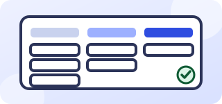

Менеджер проектов внедрения ИИ
Ведёте проект от знакомства до запуска и сопровождения, общаетесь с клиентами.

О компании
«Разработка - ИИ» внедряет ИИ-помощников в рабочие процессы компаний: от первой беседы до сопровождения после запуска. Мы начинаем с одного процесса и пилота, считаем результат и честно говорим, где без человека не обойтись.
Чем предстоит заниматься
Вы будете помогать клиентам выбирать процесс для автоматизации, согласовывать критерии результата и вести пилот.
- Знакомство с клиентом и описание процесса вместе с его командой
- Согласование критериев успеха и сроков пилота
- Координация разработчиков и аналитиков
- Контроль сроков и бюджета проекта
- Разбор результатов пилота и подготовка отчёта
- Сопровождение клиента после запуска
Что мы ждём
Обязательно:
- Опыт ведения проектов с внешними клиентами
- Умение вести переговоры и объяснять технические вещи простым языком
- Опыт работы с задачами, сроками и бюджетом
Будет плюсом:
- Опыт внедрения CRM или автоматизации
- Понимание принципов работы нейросетей
- Опыт работы с отчётностью и метриками
Условия
- Формат работы: удалённо
- Занятость: по согласованию
- Оплата: сдельная, по договорённости в зависимости от объёма работы
- Встречи: онлайн или в офисе в Москве (Нащокинский пер., д. 10)
Почему стоит откликнуться
Любите доводить проекты до результата и умеете честно говорить клиенту о рисках. У нас небольшая команда, короткие решения и реальные задачи клиентов, а не учебные.
Как откликнуться
Напишите на zakaz@razrabotka-ii.ru или позвоните по телефону +7 (963) 778-30-43. Можно сразу оставить отклик в форме ниже.
Частые вопросы
Нужен ли опыт именно в ИИ?
Не обязательно. Важнее практика в смежной области и желание разбираться.
Как проходит отбор?
Знакомство по телефону, небольшое тестовое задание по рабочей ситуации и встреча с командой. Подробности согласуем после отклика.
Можно ли работать удалённо?
Да, работа удалённая. Встречи с командой проходят онлайн, а при необходимости можно приехать в наш офис в Москве.
Расскажите о задаче
Разберём её на бесплатной получасовой встрече и честно скажем, подойдёт ли здесь ИИ.